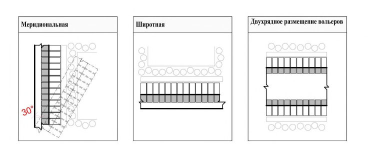
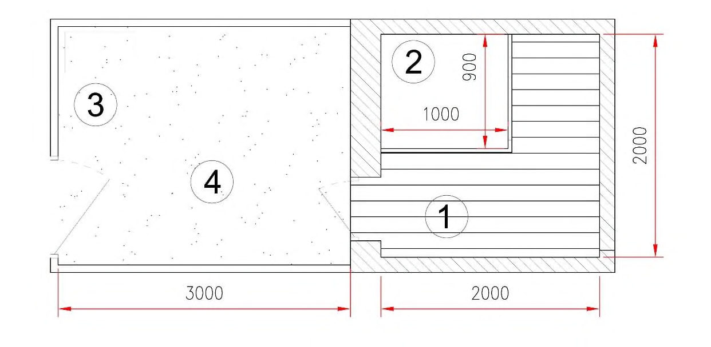

СП 492.1325800.2020 «Приюты для животных. Правила проектирования»
О документе: разработчики, утверждение, регистрация, ключевые слова
СП 492.1325800.2020
1 ИСПОЛНИТЕЛЬ Акционерное общество «Центральный научноисследовательский и проектно-экспериментальный институт промышленных зданий и сооружений» (АО «ЦНИИПромзданий»)
- 2 ВНЕСЕН Техническим комитетом по стандартизации ТК 465 «Строительство»
- 3 ПОДГОТОВЛЕН Департаментом градостроительной деятельности и архитектуры Министерства строительства и жилищно-коммунального хозяйства Российской Федерации (Минстрой России)
- 4 УТВЕРЖДЕН Приказом Министерства строительства и жилищнокоммунального хозяйства Российской Федерации от 30 декабря 2020 г. № 908/пр и введен в действие с 1 июля 2021 г.
- 5 ЗАРЕГИСТРИРОВАН Федеральным агентством по техническому регулированию и метрологии (Росстандарт)
- 6 ВВЕДЕН ВПЕРВЫЕ
В случае пересмотра (замены) или отмены настоящего свода правил соответствующее уведомление будет опубликовано в установленном порядке. Соответствующая информация, уведомление и тексты размещаются также в информационной системе общего пользования на официальном сайте разработчика (Минстрой России) в сети Интернет
© Минстрой России, 2020
Настоящий свод правил на может быть полностью или частично воспроизведен, тиражирован и распространен в качестве официального издания на территории Российской Федерации без разрешения Минстроя России
Дата введения - 2021-07-01
УДК ОКС 91.040.99
Ключевые слова: приют для животных, зона содержания животных, административно-бытовая зона, подсобно-производственная зона, зона хранения сырья и подстилки, подготовки сырья, зона хранения, обеззараживания органических отходов, карантин, стационар, вольеры, площадки выгула собак
\_\_\_\_\_\_\_\_\_\_\_\_\_\_\_\_\_\_\_\_\_\_\_\_\_\_\_\_\_\_\_\_\_\_\_\_\_\_\_\_\_\_\_\_\_\_\_\_\_\_\_\_\_\_\_\_\_\_\_\_\_\_\_\_\_\_\_\_
ИСПОЛНИТЕЛЬ
АО ЦНИИПромзданий»
Генеральный директор Н.Г. Келасьев
Руководитель разработки
Заместитель генерального директора Д.К. Лейкина
Введение
Настоящий свод правил разработан в целях соблюдения требований Федерального закона от 30 декабря 2009 г. № 384-ФЗ «Технический регламент о безопасности зданий и сооружений». Кроме того, применение настоящего свода правил обеспечивает соблюдение постановления Правительства Российской Федерации от 23 ноября 2020 г. № 1504 «Методические указания по организации деятельности приютов для животных и установления норм содержания животных в них».
Свод правил разработан авторским коллективом АО «ЦНИИПромзданий» (канд. архитектуры Д.К. Лейкина , Ю.В. Моторина) , ФГБУ «ЦНИИП Минстроя» (канд. техн. наук В.А. Гутников ), МГАВиБ-МВА имени К.И. Скрябина (канд. с.-х. наук П.Н. Виноградов ), при участии Фонда «ДОМ РФ» ( К.А. Титова), ООО «КБ Стрелка» (Д.В. Парамонова, А.Н. Макаров) .
1Область применения
1.2. Настоящий свод правил распространяется на проектирование приютов, предназначенных для содержания (передержки) животных (собак, кошек) без владельцев, животных, от права собственности на которых владельцы отказались [1].
2Нормативные ссылки
В настоящем своде правил использованы нормативные ссылки на следующие документы:
ГОСТ Р 51232-98 Вода питьевая. Общие требования к организации и методам контроля качества
ГОСТ Р 54955-2012 Услуги для непродуктивных животных. Термины и определения
ГОСТ Р 55634-2013 Услуги для непродуктивных животных. Общие требования к объектам ветеринарной деятельности
Animal shelters. Design regulations
СП .1325800.2020
ГОСТ Р 57014-2016 Услуги для непродуктивных животных. Услуги по временному содержанию непродуктивных животных. Общие требования
СП 1.13130.2020 Системы противопожарной защиты. Эвакуационные пути и выходы
СП 3.13130.2009 Системы противопожарной защиты. Система оповещения и управления эвакуацией людей при пожаре. Требования пожарной безопасности
СП 4.13130.2013 Системы противопожарной защиты. Ограничение распространения пожара на объектах защиты. Требования к объемнопланировочным и конструктивным решениям (с изменением № 1)
СП 8.13130.2020 Системы противопожарной защиты. Наружное противопожарное водоснабжение. Требования пожарной безопасности
СП 10.13130.2020 Системы противопожарной защиты. Внутренний противопожарный водопровод. Нормы и правила проектирования
СП 19.13330.2019 Сельскохозяйственные предприятия. Планировочная организация земельного участка (СНиП II-97-76* Генеральные планы сельскохозяйственных предприятий)
СП 29.13330.2011 «СНиП 2.03.13-88 Полы» (с изменением № 1)
СП 30.13330.2016 «СНиП 2.04.01-85* Внутренний водопровод и канализация зданий (с изменением № 1)
СП 31.13330.2012 «СНиП 2.04.02-84* Водоснабжение. Наружные сети и сооружения» (с изменениями № 1, № 2, № 3, № 4, № 5)
СП 32.13330.2018 «СНиП 2.04.03-85 Канализация. Наружные сети и сооружения» (с изменением № 1)
СП 42.13330.2016 «СНиП 2.07.01-89* Градостроительство. Планировка и застройка городских и сельских поселений» (с изменениями № 1, № 2)
СП 44.13330.2011 «СНиП 2.09.04-87* Административные и бытовые здания» (с изменениями № 1, № 2, № 3)
СП 51.13330.2011 «СНиП 23-03-2003 Защита от шума» (с изменением № 1)
СП 52.13330.2016 «СНиП 23-05-95* Естественное и искусственное освещение» (с изменением № 1)
СП 59.13330.2016 «СНиП 35-01-2001 Доступность зданий и сооружений для маломобильных групп населения»
СП 60.13330.2016 «СНиП 41-01-2003 Отопление, вентиляция и кондиционирование воздуха» (с изменением № 1)
СП 82.13330.2016 «СНиП III-10-75 Благоустройство территорий» (с изменениями № 1, № 2)
СП 89.13330.2016 «СНиП II-35-76 Котельные установки»
СП 106.13330.2012 «СНиП 2.10.03-84 Животноводческие, птицеводческие и звероводческие здания и помещения» (с изменением № 1)
СП 113.13330.2016 «СНиП 21-02-99* Стоянки автомобилей» (с изменением № 1)
СП 124.13330.2012 «СНиП 41-02-2003 Тепловые сети»
СП 131.13330.2018 «СНиП 23-01-99* Строительная климатология»
СП 289.1325800.2017 Сооружения животноводческих, птицеводческих и звероводческих предприятий. Правила проектирования
СП 484.1311500.2020 Системы противопожарной защиты. Системы пожарной сигнализации и автоматизация систем противопожарной защиты. Нормы и правила проектирования
СП 486.1311500.2020 Системы противопожарной защиты. Перечень зданий, сооружений, помещений и оборудования, подлежащих защите автоматическими установками пожаротушения и системами пожарной сигнализации. Нормы и правила проектирования
СанПиН 2.1.5.980-00 Гигиенические требования к охране поверхностных вод
СанПиН 2.1.5.1059-01 Гигиенические требования к охране подземных вод от загрязнения
СанПиН 2.2.1/2.1.1.1200-03 Санитарно-защитные зоны и санитарная
СП .1325800.2020
классификация предприятий, сооружений и иных объектов
Примечание - При пользовании настоящим сводом правил целесообразно проверить действие ссылочных документов в информационной системе общего пользования - на официальном сайте федерального органа исполнительной власти в сфере стандартизации в сети Интернет или по ежегодному информационному указателю «Национальные стандарты», который опубликован по состоянию на 1 января текущего года, и по выпускам ежемесячного информационного указателя «Национальные стандарты» за текущий год. Если заменен ссылочный документ, на который дана недатированная ссылка, то рекомендуется использовать действующую версию этого документа с учетом всех внесенных в данную версию изменений. Если заменен ссылочный документ, на который дана датированная ссылка, то рекомендуется использовать версию этого документа с указанным выше годом утверждения (принятия). Если после утверждения настоящего свода правил в ссылочный документ, на который дана датированная ссылка, внесено изменение, затрагивающее положение, на которое дана ссылка, то это положение рекомендуется применять без учета данного изменения. Если ссылочный документ отменен без замены, то положение, в котором дана ссылка на него, рекомендуется применять в части, не затрагивающей эту ссылку. Сведения о действии сводов правил целесообразно проверить в Федеральном информационном фонде стандартов.
3Термины и определения
В настоящем своде правил применены следующие термины с соответствующими определениями:
- 3.1ветеринарный объект
- Здания и постройки ветеринарного назначения (городские, районные станции по борьбе с болезнями животных, ветеринарные лаборатории, ветеринарные клиники, приюты и др.).Источник: 7, приложение А, пункт А.8
- 3.2ветеринарный пункт
- Функциональная группа зданий и помещений для обеспечения своевременного оказания ветеринарной помощи и своевременного обеспечения профилактических ветеринарных мероприятий в соответствии с ветеринарно-санитарными требованиями.
- ветеринарно-санитарный пропускник
- Здание (помещение), расположенное при входе на территорию объекта и (или) при входе в обособленные производственные зоны и предназначенное для проведения санитарной обработки обслуживающего персонала и посетителей, а также для дезинфекции их одежды и обуви.Источник: 13, раздел II, пункт 3
- 3.4волье ́ р для содержания собак
- Огражденная площадка для содержания собак, состоящая из закрытой части - кабины и открытой части выгула.
- 3.5волье ́ р для содержания кошек
- Огороженная площадка для группового содержания кошек в отапливаемых зданиях, строениях, состоящая из клетки и выгула, непосредственно примыкающего к клетке, вход в выгул предусматривается через сетчатый тамбур (буферную зону).
- 3.6выгульная площадка для собак
- Огороженная территория с покрытием, обеспечивающем ветеринарно-санитарные нормативы, для временного нахождения собак на открытом воздухе вне мест их постоянного или временного содержания.
- 3.7груминг-услуги для непродуктивных животных
- Комплекс услуг по уходу за шерстным и кожным покровами непродуктивных животных с соблюдением зоогигиенических норм и ветеринарно-санитарных требований. [ГОСТ Р 54955-2012, раздел II, пункт 11]
- 3.8животное без владельца
- Животное, которое не имеет владельца или владелец которого неизвестен.Источник: 1, статья 3, пункт 6
- 3.9изолятор
- Здание (помещение), предназначенное для содержания животных, больных заразными болезнями и подозрительных на наличие заболевания).Источник: 13, раздел II, пункт 3
- 3.10карантинирование
- Комплекс мер, обеспечивающий изолированное от других животных содержание животных на период проведения соответствующих обследований, диагностических исследований и (или) лечебно-профилактических ветеринарных обработок.Источник: 13, раздел II, пункт 3
- 3.11кормокухня
- Помещение, в котором подготавливают корма к скармливанию, оборудованное в соответствии с направленностью приюта.
- 3.12непродуктивное животное
- Животное, не используемое целенаправленно для получения продукции животноводства.Источник: ГОСТ Р 54955-2012, раздел II, пункт 1
- 3.13павильон для содержания собак
- Здание, строение, состоящее из одного или двух рядов сблокированных между собой вольеров для содержания собак, обеспечивающих нормативные значения ветеринарных требований к размещению и содержанию собак.
- 3.14передержка
- Временное содержание животных без владельца в приюте с момента поступления в карантин и выпуска после кастрации или стерилизации в места прежнего обитания (животных без владельцев), или передачи владельцам (безнадзорных животных).
- 3.15помещение для карантинирования животных (карантин)
- Помещение (здание) для выдерживания животных, подозрительных по инфекционным заболеваниям, и проведения в период карантинирования диагностических исследований на заразные болезни, иммунизации и других профилактических обработок животных.
- 3.16приют для непродуктивных животных
- Специально оборудованные здания, строения, сооружения для содержания животных без владельцев с соблюдением зоогигиенических и ветеринарно-санитарных требований.
- 3.17санитарно-защитная зона
- Специальная территория с особым режимом использования, устанавливаемая вокруг объектов и производств, являющихся источниками воздействия на среду обитания и здоровье человека, размер которой должен обеспечить уменьшение воздействия загрязнения на атмосферный воздух (химического, биологического, физического) до значений, установленных гигиеническими нормативами, а для предприятий I и II класса опасности - как до значений, установленных гигиеническими нормативами, так и до величин приемлемого риска для здоровья населения.Источник: СанПиН 2.2.1/2.1.1.1200-03, раздел II, пункт 2.1
- 3.18содержание животных
- Комплекс мероприятий по уходу за животным, включающий размещение, создание оптимальных зоогигиенических условий, соблюдение режима работы приюта.
- 3.19стационар
- Место индивидуального временного пребывания животного с целью оказания лечебной помощи продолжительностью более одних суток. 4.1 Приюты следует проектировать как ветеринарные объекты, градостроительные, архитектурно-планировочные, конструктивные, инженерно-технические и технологические требования к которым обеспечивают в соответствии с ГОСТ Р 57014, СП 42.13330, СП 106.13330, СП 82.13330, [1], [2], [3], [7], [8] и настоящим сводом правил в целях сохранения жизни здоровья животных без владельцев за счет создания качественной среды содержания собак и кошек. 4.2 Размещение новых и реконструкцию действующих приютов следует осуществлять согласно [3] при согласовании с органами федерального государственного ветеринарного надзора. При отводе земельного участка следует учитывать направление преобладающих ветров, рельеф местности, уровень грунтовых вод, наличие подъездных путей, возможность обеспечения водой питьевого качества, условия отведения поверхностного стока, возможность организации санитарнозащитной зоны. 4.3 Приюты в соответствии с СП 42.13330, СП 19.13330.2016 (пункт 4.2), [3, глава 4] следует проектировать на земельных участках: а) производственных зон городских и сельских поселений: на вновь отведенных земельных; ранее существовавших производственных зон городских и сельских поселений, в отношении которых проводится реконструкция; на земельных участках несельскохозяйственного назначения или непригодных для ведения сельского хозяйства; сельскохозяйственного назначения - при обосновании и в соответствии с [4]; б) государственного лесного фонда - с использованием автономных замкнутых экологически чистых инженерных систем, а также с учетом требований [6], [7], в том числе на расстоянии не менее 500 м [6] от открытых водных источников (рек, озер, прудов и пр.). При выборе земельных участков для размещения приютов следует учитывать региональные (местные) нормативы градостроительного проектирования. 4.4 Земельные участки приютов следует располагать с наветренной стороны по отношению к предприятиям и сооружениям, выделяющим вредные вещества в атмосферу, и с подветренной стороны - к жилой и общественной застройке. Здания и сооружения приютов рекомендуется размещать на возвышенных и сухих земельных участках с низким уровнем грунтовых вод. 4.6 Здания и сооружения на земельном участке приюта следует размещать компактно исходя из общей архитектурно-планировочной структуры и функционального зонирования территории, с учетом возможного воздействия на окружающую среду. 4.7 Минимальное санитарное расстояние (санитарно-защитная зона) от территории приютов до жилых и общественных территорий принимается в соответствии с действующими санитарно-эпидемиологическими нормами, в том числе СанПин 2.2.1/2.1.1.1200. Расстояние между зданием карантина для поступающих в приют животных и другими зданиями для содержания животных, а также другими зданиями и сооружениями приюта следует принимать не менее 50 м [6], [7, пункт 1.10]. 4.8 При проектировании новых и реконструкции существующих приютов следует обеспечивать доступность земельного участка для маломобильных групп населения (МГН) в соответствии с требованиями СП 59.13330. Состав доступных для МГН административных, бытовых и иных зданий (помещений) определяется заданием на проектирование. 4.9 Приюты подразделяются: по принадлежности -на государственные, муниципальные и частные [1]; по типу содержания -на смешанного (собаки и кошки) и специализированного (или собаки или кошки); по численности содержащихся в приюте животных (далее -вместимости); по строительным характеристикам зданий и сооружений приюты - могут иметь в своем составе капитальные здания [3, статья 1, пункт 10]), временные [3, статья 1, пункт 10.2]), модульные здания, в том числе из сборно-разборных конструкций. 4.10 Предельная вместимость приютов определяется заданием на проектирование в зависимости от принадлежности, численности животных в приюте, эпизоотической ситуации. Рекомендуемая численность содержащихся в приюте животных - не более 300 животных (собак и кошек). В приютах вместимостью более 300 животных зооветеринарный разрыв между земельными участками, на которых расположены павильоны для содержания собак, должен составлять 60 м. 4.11 Для постоянного содержания собак и кошек в приюте предусматриваются вольеры и(или) клетки в зависимости от вида животных. В карантине, изоляторе и стационаре допускается только индивидуальное содержание животных в клетках или боксах. Павильоны для содержания собак и помещения с вольерами и клетками для содержания кошек, при размещении их в одном приюте, следует проектировать раздельными, обеспечивая исключение визуального контакта между собаками и кошками [8]. 4.12 Не допускается размещение приютов в жилых, общественных, административных и производственных зданиях при новом строительстве и реконструкции [1], [7]. Запрещается организация приютов для животных в квартирах любой формы собственности. 4.13 Штатную численность сотрудников приюта следует определять в зависимости от вместимости приюта по заданию на проектирование, включая административный и обслуживающий персонал [8]. Примечание - При количестве животных в приюте менее 150, их ветеринарное обслуживание приведено в [8]. 4.14 Проектирование зданий и сооружений приюта выполняется с учетом требований по энергосбережению и повышению энергетической эффективности и по охране окружающей среды [5], [7], [8].Источник: ГОСТ Р 55634-2013, пункт 3.6
5Требования к размещению и планировочной организации земельных участков
Минимальные зооветеринарные расстояния от автомобильных и железных дорог до границ земельных участков приютов принимают по [6, пункт 3.5, таблица 2].
- c одним или несколькими зданиями и сооружениями, с административными, вспомогательными (для административного персонала), бытовыми (для административного, обслуживающего персонала и посетителей, волонтеров) помещениями в их составе;
- пропускного пункта с ветеринарно-санитарным пропускником (ветсанпропускник может входить в состав административного здания);
- стоянки автомобилей для административного, обслуживающего персонала, посетителей, волонтеров;
- объектов инженерно-технического обслуживания (по заданию на проектирование); зону содержания животных, состоящую из функциональных участков:
- постоянного содержания животных;
- выгульных площадок;
- ветеринарного пункта;
- карантина; зону хранения сырья и подстилки, подготовки сырья к использованию, состоящую из:
- склада кормов, склада подстилки;
- склада хозяйственного инвентаря;
- здания (строения) кормокухни (при необходимости); зону хранения, обеззараживания органических отходов.
Примечание - Допускается в зависимости от градостроительной ситуации, размеров земельного участка, вместимости приюта, размещать в административно-бытовой зоне лечебные здания, помещения, а также выделять в отдельную зону - зону объектов инженерно-технического обслуживания, состоящую из сооружений водоснабжения, канализации, электро- и теплоснабжения, навесов и площадок с ограждениями.
По заданию на проектирование в соответствии с [1] на земельных участках приютов может размещаться изолированная от других дополнительная зона, в которой находятся здания и сооружения по осуществлению деятельности по временному содержанию (размещению) домашних животных по соглашению с их владельцами, а также здания для осуществления деятельности по оказанию ветеринарных и иных услуг.
По периметру земельных участков приютов следует проектировать сплошное глухое ограждение высотой 2,0 м (с цоколем, заглубленным не менее чем на 0,6 м).
Примечание - В горных местностях и районах с высоким снежным покровом высоту ограждений приютов рекомендуется принимать 2,5 м.
В административно-бытовой зоне следует предусматривать места для стоянки (парковки) легковых автомобилей: по обеспеченности - по заданию на проектирование, по размерам машино-мест - по СП 113.13330, СП 59.13330.
В зависимости от местных условий (климатические характеристики района строительства, рельеф местности и др.) допускается:
- отклонение от ориентации павильонов до 30° для земельных участков, расположенных севернее широты 50 о ;
- широтная ориентация павильонов (продольной осью с востока на запад) для земельных участков, расположенных к югу от широты 50° по [7].
Примечание - В случае отсутствия дезинфекционного барьера на въезде оборудуется площадка с твердым покрытием и накопителем для сбора отработанного дезинфицирующего раствора, для обработки транспортных средств с помощью дезинфицирующих установок методом распыления дезинфицирующих растворов, не замерзающих при минусовых температурах.
6Требования к объемно-планировочным решениям и функциональным группам помещений зданий и сооружений
Общие требования
В климатических районах строительства с расчетной зимней температурой наружного воздуха ниже минус 20 °С, а также в районах со скоростью ветра выше 4 м/с ветрами в зданиях и сооружениях следует предусматривать тамбуры или тепловые завесы.
На территориях I - III климатических районов строительства (по СП 131.13330) и в районах Крайнего Севера и местностей, приравненных к районам Крайнего Севера, в приютах предусматривают в кабинах утепленные будки для собак [8].
Административно-бытовая зона
6.5. Рекомендуемый состав функциональных групп помещений зданий и сооружений, входящих в административно-бытовую зону приюта для содержания 300 и более животных приведен в таблице А.1.
Зона содержания животных
В зоне содержания животных следует проектировать павильоны для содержания собак, состоящие из вольеров. Каждый вольер должен состоять из закрытой части - кабины, в которой может размещаться будка, и открытой части
- выгула.
Ориентация павильонов для содержания собак по сторонам света на территории приюта должна соответствовать 5.6 с учетом обеспечения достаточной инсоляции [7].
При двухрядном расположении вольеров следует ограничивать визуальный контакт между животными. Перегородки, отделяющие один вольер от другого, выполняются глухими на высоту не менее 1,2 м.
Проходы в павильонах для содержания собак с двухрядным размещением вольеров должны иметь ширину в соответствии с габаритами применяемого оборудования по раздаче кормов.
Рекомендуемые схемы расположения павильонов для содержания собак приведены на рисунке В.1.
Площадь кабины на одну собаку должна составлять не менее, м² :
- для собак живой массой 22,5 кг и крупнее - 2,5;
- для средних собак живой массой 16 - 22,5 кг - 1,8;
- для небольших собак живой массой 10 - 16 кг - 1,1;
- для мелких собак живой массой менее 10 кг - 0,6.
Пол кабины выполняется из бетона толщиной до 15 см с уклоном к задней стене, внизу которой располагается выходящая наружу труба диаметром 15-20 мм для слива грязной воды во время уборки и дезинфекции. Сверху бетонный пол кабины покрывается разборными (выносными) деревянными полами, по внутреннему размеру кабины, изготавливаемыми из плотно сшитых между собой досок толщиной 40 мм на продольном основании высотой 20 см.
Потолок кабины выполняется из плотно подогнанных досок толщиной не менее 20 мм, с гидро- и теплоизоляционным слоем. Поверх перекрытия устраивается кровля, которая должна иметь покат назад и выступать спереди и сзади стен на 40-60 см для обеспечения стока воды.
Входная дверь в каждую кабину навешивается на петлях, в нижней части каждой двери оборудуется лаз размерами 40×50 см для выхода собаки в выгул. Над дверью оборудуется застекленная фрамуга (20×70 см), обеспечивающая дневное освещение кабины.
СП .1325800.2020
Боковые стены выгула выполняются глухими (из деревянной доски или кирпича). Допускается боковую стенку выгула выполнять на высоту 1,2 м сплошной, а выше 1,2 м - из металлической сетки.
Фасадная стена выгула на высоту 0,6 - 0,8 м выполняется глухой, а выше металлической сеткой или металлическими прутьями.
Дверь выгула должна открываться внутрь и закрываться снаружи и изнутри запором (задвижкой).
Пол выгула должен быть малотеплопроводным, водонепроницаемым и прочным с уклоном от боковых стен выгула к центру и в сторону фасада павильона (при однорядном расположении вольеров).
Примечание - Внутри кабины в районах с жарким климатом вместо будки оборудуется переносной стеллаж, используемый как лежак для собаки. По краям стеллажа предусматривают деревянный бортик высотой 100 мм.
Выгульная площадка должна быть освещена, оборудована поилками для собак, контейнером для сбора кала. По внешнему периметру выгульной площадки рекомендуется размещать низкий декоративный кустарник.
Выгульная площадка должна быть с сетчатым ограждением высотой не менее 2,0 м для возможности визуального контроля за животными, при этом следует предусматривать заглубление сетки на 0,4 м для исключения возможности подкопа ограждения.
Примечание - Допускаются иные виды устройства низа ограждения, предотвращающие их подкоп собаками - бетонная лента, горизонтально вкопанная сетка, шириной не менее 1,0 м.
В вольере размещают лотки для отходов от содержания кошек из расчета один лоток на 2-3 кошки [8].
Групповые вольеры для содержания кошек проектируют не более чем на 5 животных. Нормы площади на одно животное в вольере: площадь клетки - не менее 0,5 м² ; выгула - 1,0 м² .
В зданиях для размещения кошек в групповых вольерах и размещения собак и кошек в клетках высоту от уровня пола до низа оконных проемов следует принимать не менее 1,2 м. Оконные проемы должны иметь сетки, предотвращающие проникновение через них животных.
Стены, полы, потолки помещений лечебной зоны должны быть гладкими, окрашенными в светлые тона влагостойкими красками или облицованы влагостойкими и устойчивыми к дезинфицирующим средствам материалами (керамической плиткой, или плиткой из полимерных материалов) по ГОСТ Р 55634.
Покрытия стен и потолков должны позволять проводить регулярную влажную уборку и дезинфекцию растворами.
Конструкция пола индивидуальных клеток должна удовлетворять следующим требованиям:
- пол клетки должен пропускать жидкость;
- под полом клетки должен располагаться поддон для сбора жидкости и отходов жизнедеятельности площадью не менее площади пола, поддон должен свободно выниматься и вставляться на место без необходимости наклона и складирования.
2,2 - для крупных собак живой массой свыше 22,5 кг;
1,8 - для средних собак живой массой 16,0 - 22,5 кг;
1,1 - для небольших и мелких собак живой массой менее 16 кг;
1,0 - для кошек любой живой массы.
Высота индивидуальных клеток должна быть не менее, м:
0,9 - для крупных и средних собак;
0,6 - для небольших и мелких собак;
0,5 - для кошек любой живой массы.
Для дезинфекции обуви при входе (выходе) в изолятор следует устраивать входные дезинфекционные барьеры (коврики), заполненные поролоном, опилками или другим материалом, пропитанным дезинфицирующими растворами, по ширине прохода и длиной не менее 1 м.
Здание карантина должно включать:
- приемное отделение для санитарной обработки животных, состоящее из помещений для приема и санитарной обработки животных, для хранения лекарственных препаратов для ветеринарного применения и инструментов, кладовой для дезинфицирующих, дезинвазионных и моющих средств;
- отделение содержания животных, состоящее из помещений для временного содержания животных в изолированных индивидуальных клетках, боксах (площадь клеток по 6.25), склада кормов и инвентарной.
Примечание - Площадь помещений карантина определяется заданием на проектирование в зависимости от вместимости приюта.
Зона хранения сырья и подстилки, подготовки сырья
Примечание - Допускается размещение кормокухни в административно-бытовом здании при наличии отдельного входа в это помещение.
Зона хранения, обеззараживания органических отходов
Зона объектов инженерно-технического обслуживания
Примечание - Допускается по заданию на проектирование зону объектов инженерно-технического обслуживания совмещать с административно-бытовой зоной.
7Требования пожарной безопасности
- павильонов для содержания собак - Ф5.1;
- остальных зданий и сооружений - по [2].
8Требования к инженерному обеспечению
Водоснабжение
Для подачи воды на технологические и хозяйственные нужды приюты следует оборудовать объединенным водопроводом по СП 31.13330.
Канализация
Поверхностный сток с земельного участка приюта следует собирать отдельной сетью (открытой или закрытой) ливневой канализации со сбором в водонепроницаемые емкости для последующей утилизации [15].
Электроснабжение
В зданиях, помещениях и сооружениях, где находятся животные, следует предусматривать мероприятия по защите электропроводки от погрызания во избежание поражения животных током.
СП .1325800.2020
Теплоснабжение, отопление, вентиляция
9Охрана окружающей среды
АПриложение А. СП .1325800.2020
Ориентировочный состав функциональных групп основных помещений, зданий и сооружений, входящих в административно-бытовую зону приюта для содержания 300 и более животных
Таблица А.1
| Назначение | Перечень помещений | Норма площади, м² |
|---|---|---|
| помещений Помещения для администрации | Вестибюль | ПоСП 44.13330.2011 (пункт 4.5), [11, пункт 5.2.9] |
| помещений Помещения для администрации | Кабинет руководителя | По [11, пункт 5.2.2] - от 9 до 18 |
| помещений Помещения для администрации | Кабинеты для работников управленческого аппарата (бухгалтерия, отдел кадров, планово- экономическая служба и пр.) | По [11, пункт 5.2.3] на: - технического исполнителя (секретарь и т.п.) - 4,0; - специалиста (инженер, технолог, зооинженер, экономист и т.д.) - 4,5; - главного специалиста - 6,0 |
| помещений Помещения для администрации | Конференц-зал (зал для заседаний) | По заданию на проектирование в соответствии с СП 44.13330.2011 (пункт 6.6) |
| помещений Помещения для администрации | Помещение серверной, телеаппаратуры и др. | По заданию на проектирование |
| помещений Помещения для администрации | Помещение архива | По СП 44.13330.2011 (пункт 6.12) |
| помещений Помещения для администрации | Помещение для уборочного инвентаря (ПУИ) | Не менее 2,0 м² на этаж (при наличии второго этажа) |
| помещений Помещения для администрации | Помещение для охраны Гардероб уличной и домашней одежды | По [11, пункт 5.2.9] - 6,0 По СП 44.13330.2011 (пункты 5.3, 5.25) и [11, пункт 4.2.9] |
| помещений Помещения для администрации | Гардероб специальной одежды | По СП 44.13330.2011 (пункты 5.3, 5.25) и [11, пункт 4.2.9] |
| помещений Помещения для администрации | Уборная | По СП 44.13330.2011 (пункты 5.3, 5.25) и [11, пункт 4.2.11] |
| помещений Помещения для администрации | Умывальные | По СП 44.13330.2011 (пункты 5.3, 5.25) |
| помещений Помещения для администрации | Душевая и преддушевая | По СП 44.13330.2011 |
СП 1325800.2020
| (пункты 5.3, 5.25) и [11, пункт 4.2.10] | ||
|---|---|---|
| Помещение для отдыха персонала | По СП 44.13330.2011 (пункт 5.46) и [11, пункт 4.3.7] | |
| Помещение личной гигиены женщин | [11, пункт 4.3.4] | |
| Постирочная | [11, пункт 4.2.14] | |
| Помещение для сушки спецодежды и обуви | [11, пункт 4.2.13] | |
| Помещение для оказания первой медицинской помощи | [11, пункт 4.3.2] | |
| Комната приема пищи | [11, пункт 4.4.9] | |
| Ветеринарно- санитарный пропускник | Состав помещений определяется в зависимости от численности работающих в приюте [11, таблица 2] | |
| Въездной дезинфек- ционный барьер | По СП 289.13330 |
Примечание - Состав функциональных групп помещений зданий и сооружений, входящих в административно-бытовую зону приюта для содержания менее 300 животных, уточняют заданием на проектирование в зависимости от вместимости приюта.
СП .1325800.2020
Ориентировочная номенклатура зданий и сооружений, состав помещений в зоне содержания животных
Таблица Б.1
| Здания, сооружения | Перечень помещений | Норма площади, м² |
|---|---|---|
| Ветеринарный пункт (для приютов на 300 животных и | Амбулатория | Амбулатория |
| Ветеринарный пункт (для приютов на 300 животных и | Приемная-смотровая | Не менее 10 |
| Ветеринарный пункт (для приютов на 300 животных и | Кабинет специалиста в области ветеринарии | Каждый не менее 10 |
| более) | Кабинет функциональной диагностики | Каждый не менее 10 |
| Ветеринарный пункт (для приютов на 300 животных и | Процедурная | Не менее 10 |
| Ветеринарный пункт (для приютов на 300 животных и | Операционная | Не менее 10 свободного пространства |
| Ветеринарный пункт (для приютов на 300 животных и | Моечная- дезинфекционная | Не менее 10 |
| Ветеринарный пункт (для приютов на 300 животных и | Вскрывочная | Не менее 6 |
| Ветеринарный пункт (для приютов на 300 животных и | Помещение для хранения лекарственных препаратов для ветеринарного применения (аптека) | Не менее 10 |
| Ветеринарный пункт (для приютов на 300 животных и | Кладовая для дезинфицирующих средств | Не менее 10 |
| Ветеринарный пункт (для приютов на 300 животных и | Помещение для хранения трупов с морозильной камерой | Не менее 10 |
| Ветеринарный пункт (для приютов на 300 животных и | Помещение архива | Не менее 6 |
| Ветеринарный пункт (для приютов на 300 животных и | Стационар | Стационар |
| Ветеринарный пункт (для приютов на 300 животных и | Помещения для содержания больных животных: - для собак - для кошек | Площадь клетки на собаку - по 6,25; площадь клетки на кошку - по 6,25 |
| Ветеринарный пункт (для приютов на 300 животных и | Инвентарная | Не менее 6 |
| Ветеринарный пункт (для приютов на 300 животных и | Послеоперационная | Не менее 9 |
| Ветеринарный пункт (для приютов на 300 животных и | Санузел для сотрудников | Из расчета 2 м² на 1 кабину |
| Ветеринарный пункт (для приютов на 300 животных и | Изолятор | Изолятор |
| Ветеринарный пункт (для приютов на 300 животных и | Помещение для содержания больных животных | Изолированные боксы по 6,25 |
| Ветеринарный пункт (для приютов на 300 животных и | Карантин | Карантин |
СП 1325800.2020
| Помещения для содержания собак в индивидуальных клетках | По заданию на проектирование | По заданию на проектирование | |
|---|---|---|---|
| Помещения для содержания кошек в индивидуальных клетках | По заданию на проектирование | По заданию на проектирование | |
| Павильоны для содержания | Вольеры для содержания собак | Вольеры для содержания собак | Вольеры для содержания собак |
| собак | Кабина, будка/домик | 4 м² | 4 м² |
| собак | Выгул | 6 м² | 6 м² |
| собак | Кабина для щенков | По 6,25 | По 6,25 |
| собак | Выгул для щенков | По 6,25 | По 6,25 |
| Здания для содержания | Вольеры и клетки для содержания кошек | Вольеры и клетки для содержания кошек | Вольеры и клетки для содержания кошек |
| кошек | Вольер до 5 кошек | По 6,25 | По 6,25 |
| кошек | Вольер для котят | По 6,25 | По 6,25 |
| Выгульные площадки для собак | Не менее 400 м² каждая | Не менее 400 м² каждая | |
| Выгульные площадки для щенков | По заданию на проектирование | По заданию на проектирование |
Примечание - Состав помещений и количество зданий и сооружений уточняют заданием на проектирование в зависимости от вместимости приюта. Количество павильонов и вольеров в них по заданию на проектирование.
Варианты компоновки вольеров, размеры вольера
Рисунок В.1 Компоновка вольеров в павильонах


- [ ] -
- [ ] кабина (будка); - холодный контур - выгул; О - озеленение
1 - кабина; 2 - будка; 3 - место кормления; 4 - выгул
Рисунок В.2 -Вольер для собаки
Приложение Г
Приемы комплексного благоустройства для функциональных зон приюта для животных
Таблица Г.1
| Функциональные зоны | Мероприятия защиты окружающей среды | Рекомендуемые приемы комплексного благоустройства |
|---|---|---|
| Административно- бытовая зона | Защита от пыли и других вредностей, а также создание комфортных условий для труда, отдыха и передвижения по территории | Максимальное применение газонного покрытия, твердые покрытия из не пылящих материалов. Размещение средств информации, площадок отдыха. Рядовые посадки вдоль основных подходов. Озеленение, обеспечивающее аэрацию, по СП 82.13330 |
| Зона содержания животных | Изоляция помещений и территории от прилегающих функциональных зон, защита от проникновения пыли и грязи. Защита окружающей среды от выбросов, запахов и шумов. Хорошее проветривание территории. Защита от пыли и других вредностей. Обеспечение инсоляции | Применение плотных посадок защитных полос из групп деревьев и кустарников. Устройство рядовых посадок вдоль основных путей движения. Исключается применение растений, засоряющих среду пыльцой, семенами, волосками, пухом. Ассортимент деревьев и кустарников, обладающий бактерицидными свойствами. Применение покрытий способных пропускать пыль в нижние слои - щебень, гравий. Применение пылеудерживающих зеленых насаждений |
| Зона хранения сырья и подстилки, подготовки сырья, зона хранения, обеззараживания органических отходов, подсобно- производственный участок (зона) | Защита от пыли и аэрация территории | Устройство твердых покрытий из не пылящих материалов. Посадки растений для экранирования зоны и вдоль путей движения |
Библиография
- [1] Федеральный закон от 27 декабря 2018 г. № 498-ФЗ «Об ответственном обращении с животными и о внесении изменений в отдельные законодательные акты Российской Федерации»
- [2] Федеральный закон от 22 июля 2008 г. № 123-ФЗ «Технический регламент о требованиях пожарной безопасности»
- [3] Федеральный закон от 29 декабря 2004 г. № 190-ФЗ «Градостроительный кодекс Российской Федерации»
- [4] Федеральный закон от 21 декабря 2004 г. № ФЗ-172 «О переводе земель или земельных участков из одной категории в другую»
- [5] Федеральный закон от 24 июня 1998 г. № 89-ФЗ «Об отходах производства и потребления»
- [6] РД-АПК1.10.07.01-12 Методические рекомендации по технологическому проектированию ветеринарных объектов для животноводческих, звероводческих и птицеводческих предприятий и крестьянских (фермерских) хозяйств
- [7] РД-АПК 1.10.07.03-14 Методические рекомендации по технологическому проектированию ветеринарных объектов для городских поселений и других муниципальных образований
- [8] Постановление Правительства Российской Федерации от 23 ноября 2019 г. № 1504 «Об утверждении методических указаний по организации деятельности приютов для животных и установлению норм содержания животных в них»
- [9] О применении санитарных мер в Евразийском экономическом союзе (Решение Комиссии Таможенного союза от 28 мая 2010 г. № 299)
- [10] ОСН-АПК 2.10.14.001-04 Нормы по проектированию административных, бытовых зданий и помещений для животноводческих, звероводческих и птицеводческих предприятий и других объектов сельскохозяйственного назначения
- [11] ОСН-АПК 2.10.24.001-04 Нормы освещения сельскохозяйственных предприятий, зданий и сооружений
- [12] Ветеринарно-санитарные правила сбора, утилизации и уничтожения биологических отходов (утв. Главным государственным ветеринарным инспектором Российской Федерации 4 декабря 1995 г. № 13-7-2/469)
- [13] ВСП 13-5-02/0043-01 Ветеринарно-санитарные правила по организации и проведению дератизационных мероприятий
- [14] Об утверждении Единых ветеринарных (ветеринарно-санитарных) требований, предъявляемых к объектам, подлежащим ветеринарному контролю (надзору) (Решение Коллегии Евразийской экономической комиссии от 13 февраля 2018 г. № 27)
- [15] РД-АПК 3.10.01.03-17 Методическое пособие по проектированию сооружений ливневой канализации животноводческих предприятий
- [16] ПУЭ Правила устройства электроустановок (7-е изд.)
- [17] СО 153-34.21.122-2003 Инструкция по устройству молниезащиты зданий, сооружений и промышленных коммуникаций
- [18] СП 41-101-95 Проектирование тепловых пунктов